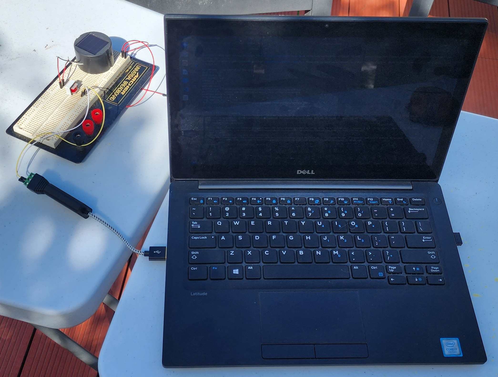

Recording insect wingbeat waveforms

Applications for this project include:
monitoring of agricultural pests, pollinators and biological control agents
monitoring flight activity in the vicinity of honeybee hives to include foragers and pests such as hornets and hive beetles
measuring the efficacy of mosquito coils and other insect repellents